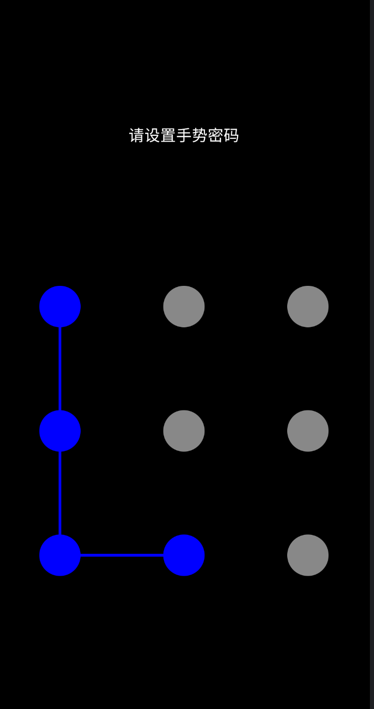
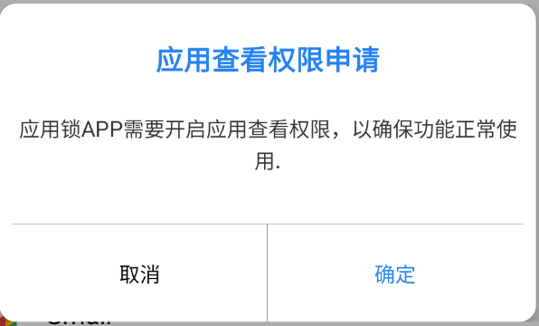
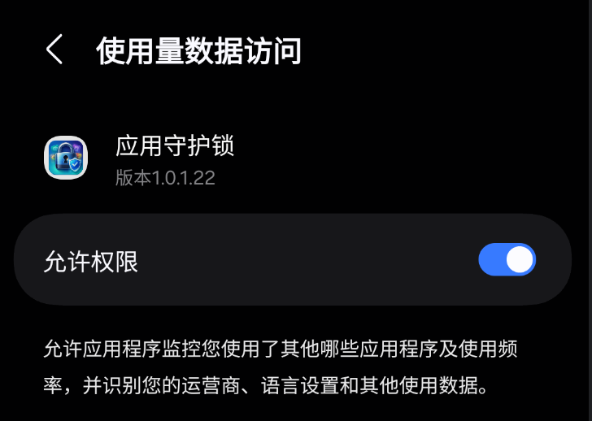
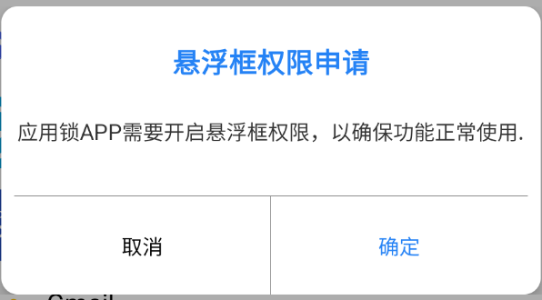
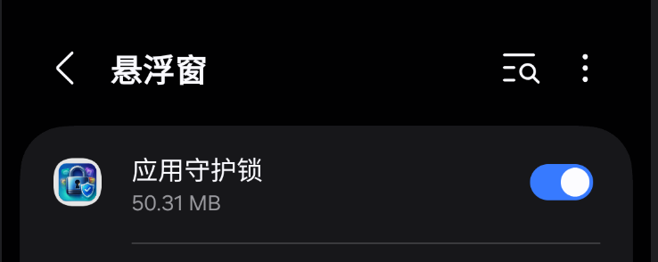
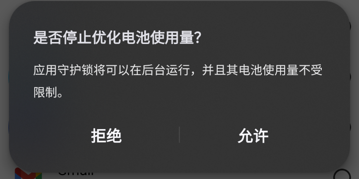
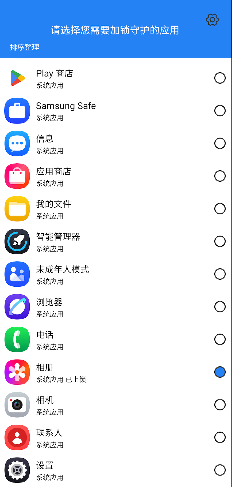
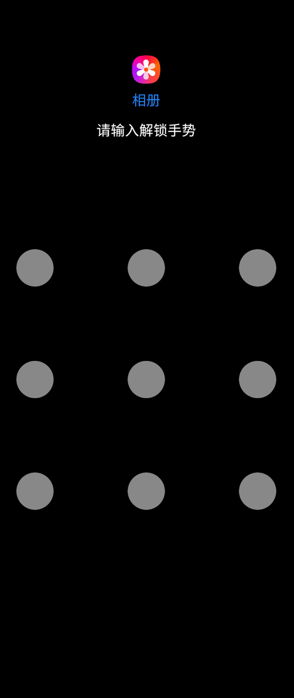

When you open the app for the first time, you will be asked to create a password or pattern. This password will be used to unlock protected applications.

To ensure the app lock works properly, please grant the required permissions such as Accessibility Service and Overlay Permission.





Open the app list and select the applications you want to protect. Once selected, these apps will require your password before opening.

Once everything is set up, your selected applications will be protected. Whenever someone tries to open them, they must enter the correct password.
